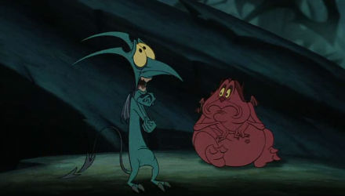

Dejen que me presente, me llamo Hades.
Muchos me conoceréis por ser el encargado del Inframundo pero déjenme que les hable un poquito sobre mi.
Soy hijo de Cronos y Rea y soy el hijo mayor (varón).
Tengo dos hermanos, Poseidón y Zeus que, junto a los que, tras derrotar a los titanes, fui nombrado Dios del Inframundo, por desgracia.
Ellos tuvieron más suerte, ya que fueron nombrados Dios del Mar (Poseidón) y Dios del Cielo o Rayo(Zeus).
Mientras a mis hermanos les tocó la mejor parte, yo fui destinado a encargarme del más allá, dónde terminan todas las
almas de los muertos.

Okey, está bien, tranquilicémonos mejor.
Aquí les presento a mi hermano Zeus, al cual se puede decir que no tengo mucho aprecio.
Me tiene completamente harto, es irritante.
Por si fuera poco, a parte del estorbo de mi hermano, tengo que convivir en el Inframundo con dos demonios que tengo por esbirros, Pena y Pánico. Los esbirros más inútiles de la faz de la Tierra.

Como muchos sabréis para una tarea que les pedí, que era volver mortal al hijo (o rata) de Zeus, Hércules, fracasaron.
Enfin, mientras planeo otra forma de expulsar a mi hermano del Olimpo y de hacerme el jefe de todos los dioses, tengo
que encargarme de todas las almas que vagan perdidas por el más allá.
Aunque no les voy a engañar, de vez en cuando me gusta tomarme un tiempo libre y divertirme un poco.